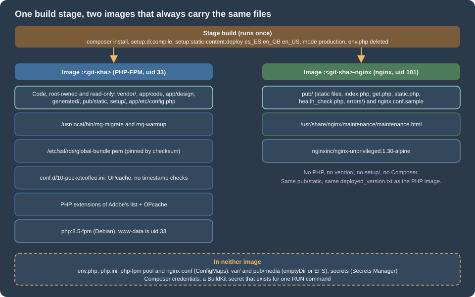
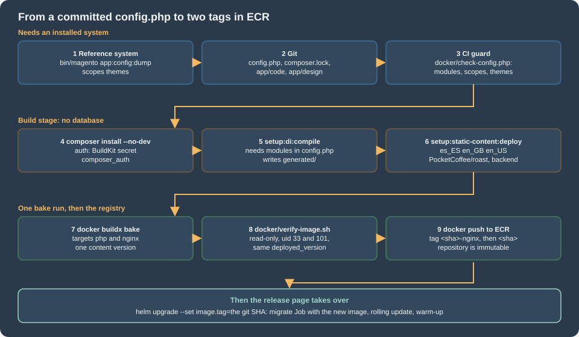

Cloud: Container Image and Pipeline Build
|
This content was generated with the assistance of AI and should be verified against the official documentation before being relied on in production. |
This page was written against Magento Open Source and Adobe Commerce 2.4.9 (general availability 2026-05-12) and Mage-OS 3.6.0, PHP 8.5 in the
image (the version Adobe’s 2.4.9 table lists), Composer 2.10, the nginx 1.30 line that the same table lists, Docker with BuildKit and Buildx, and
Amazon ECR, and was checked on 2026-10-29. It names no prices: the cost drivers it mentions (build minutes, registry storage) are things to measure, not
figures to copy. Read the last section before you rely on the Dockerfile: the machine that checked this page had a full Docker disk, so the
Dockerfile was reviewed and its parts were tested, but docker build itself was not run.
The running example is Pocket Coffee with the names of Cloud: Reference Architecture:
the ECR repository 123456789012.dkr.ecr.eu-west-1.amazonaws.com/pocketcoffee/magento, the modules PocketCoffee_RoastAdmin, PocketCoffee_Pay,
PocketCoffee_Skeleton and PocketCoffee_Api, the theme PocketCoffee/roast (a child of Magento/luma, built on
Frontend: Luma Themes), the store views es, en and us and the locales es_ES, en_GB and
en_US. The image is the contract with the chart of Cloud: EKS Infrastructure and Helm Deployment
and with the release scripts of
Cloud: Releases and Zero-Downtime Deployments; those pages say how the image is run,
this page says how it is made. How Docker itself works is on
Build Cache and Multi-Stage Builds,
BuildKit and Buildx and
Image Best Practices and Supply-Chain Security, and ECR is on
Container Registry, so none of that is repeated.

What the chart expects from the image
A Magento deployment that changes on a running server (Composer on the server, setup:di:compile on the server, files edited in place) cannot run on
a cluster: every pod would have its own copy. The image therefore carries everything that is code, and the chart of this series (page 36) expects exactly
this from it:
| The chart expects | What the Dockerfile does about it |
|---|---|
Two tags per build: |
Two targets of one Dockerfile, |
PHP-FPM as uid and gid 33, |
The official |
nginx as uid 101, listening on 8080 (the configuration comes from the ConfigMap |
|
nginx sees |
The nginx image copies |
|
Both are kept. The web setup ( |
|
Copied from the repository with mode 0755; the scripts are on the releases page. |
|
Copied from the repository. |
|
The build uses a minimal |
|
It is a source file of the build, checked by a guard script, never generated inside the build. |
The RDS CA bundle at |
Downloaded and verified against a pinned SHA-256 in its own stage (the reasons are on Cloud: Managed Database (RDS and Aurora)). |
Writable paths only through volumes: |
The directories exist in the image as mount points and are empty; everything else is root-owned and read-only. |
Build system and production system
Adobe’s pipeline deployment model separates three systems, and the separation is what makes the image possible. The development system is an
installed Magento with a database where the developer creates store views, registers themes, enables modules and changes configuration; it is the
only place where app:config:dump can run. The build system has the code, PHP and Composer and produces the generated code and the static files;
Adobe’s page says that it needs no installed Commerce and no database connection when config.php already carries what the build would
otherwise ask the database for. The production system receives the result and does not change it. On this series:
| System | Where it is | What it is allowed to do |
|---|---|---|
Development (reference) system |
The local Docker Compose stack of Local Development Environments, or a staging copy |
Install, enable modules, create store views, change themes, run |
Build system |
A CI runner that runs |
Composer, |
Production system |
The pods of the chart |
Read the image. Write |

config.php: app:config:dump needs an installed system
bin/magento app:config:dump is a module command of Magento_Deploy. Magento registers module commands only when the deployment configuration is available, which
the 2.4.9 code decides by the presence of install/date in env.php (DeploymentConfig::isAvailable(), read in the 2.4.9 tag), and the command reads
its values from the configuration sources, which for the scopes and the system configuration are database tables. A build that has no installation has nothing to
dump. So the dump is not a step of the Docker build, in spite of what a shortcut such as "run app:config:dump in the image build" suggests: it is a step of the
development system, and its output (app/etc/config.php) is a source file that is committed. The image build consumes it.
What the dump writes, from Adobe’s page and the 2.4.9 sources of ApplicationDumpCommand and the di.xml files that register its sources: the config types scopes
(websites, store groups, store views), themes (the registered themes with their parents), i18n and system (system configuration values). Settings that a module declares
as sensitive or system-specific go to env.php and are not part of the commit. A configuration path that is set in config.php or env.php is locked in the Admin (the field is shown as disabled), and
the releases page
explains why scopes matter for the release: the importer applies them from the file, including deletions.
# Same branch as the image, installed, with the store views es, en and us and the theme registered.
bin/magento module:status --enabled | grep PocketCoffee_
bin/magento app:config:dump scopes themes
# The review is part of the change: every new module, store view or theme must be intended.
git diff --stat app/etc/config.php
git add app/etc/config.php composer.json composer.lockWhat to dump is a decision, because config.php is shared by every environment of the image:
-
Always
scopesandthemes. They are what makes a build possible without a database (next section), and they are what the release Job imports. -
The module list.
setup:upgradeon the reference system writes the module list intoconfig.php(the releases page shows that it does so on every run). A module that was added tocomposer.jsonorapp/codeand never enabled on a reference system is missing from the committed file, andsetup:di:compileskips modules that are not listed as enabled (see below).module:enable --allin the build is the wrong answer: it enables every module that someone disabled on purpose. -
systemonly after a review. The dump writes the configuration values of the reference system, including its base URLs, its search host and its payment mode. The cluster sets those inenv.php(base URLs, search, full page cache, media URLs), and values for the same path in both files are a source of confusion. The guard below rejects a base URL in the default scope. For a single value that must be the same everywhere,bin/magento config:set --lock-config <path> <value>writes just that value toconfig.php. -
Never a secret. Sensitive values stay out of the dump by design, but a value that a third-party module did not declare as sensitive does not. The guard rejects keys that look like secrets.
The guard runs at the start of the build, before anything slow:
<?php
/**
* Build guard for app/etc/config.php. Usage:
* php docker/check-config.php app/etc/config.php --module Vendor_Module ... --theme frontend/Vendor/theme ...
* Exit 0 when the file can drive a build without a database, 1 otherwise.
*/
declare(strict_types=1);
$argv = $_SERVER['argv'];
array_shift($argv);
$path = array_shift($argv);
$modules = [];
$themes = [];
while ($argv) {
$flag = array_shift($argv);
$value = array_shift($argv);
if ($value === null) {
fwrite(STDERR, "missing value after $flag\n");
exit(2);
}
if ($flag === '--module') {
$modules[] = $value;
} elseif ($flag === '--theme') {
$themes[] = $value;
} else {
fwrite(STDERR, "unknown option $flag\n");
exit(2);
}
}
if ($path === null || !is_file($path)) {
fwrite(STDERR, "usage: check-config.php <config.php> [--module X]... [--theme Y]...\n");
exit(2);
}
$config = require $path;
$errors = [];
if (!is_array($config)) {
fwrite(STDERR, "$path does not return an array\n");
exit(1);
}
// 1. The module list: every module the code registers must be listed, and ours must be enabled.
$list = $config['modules'] ?? [];
if (!is_array($list) || count($list) === 0) {
$errors[] = "no 'modules' list: setup:di:compile would stop with 'modules are not enabled'";
}
foreach ($modules as $module) {
if (($list[$module] ?? null) !== 1) {
$errors[] = "module $module is not enabled (1) in the modules list";
}
}
// 2. Scopes and themes: without them a build has to ask the database for both.
foreach (['scopes', 'themes'] as $section) {
if (!isset($config[$section]) || !is_array($config[$section]) || count($config[$section]) === 0) {
$errors[] = "no '$section' section: run app:config:dump $section on the reference system";
}
}
foreach ($themes as $theme) {
if (!isset($config['themes'][$theme])) {
$errors[] = "theme $theme is not in the 'themes' section";
}
}
// 3. Nothing that looks like a secret or an environment may be committed in this file.
$pattern = '/(^|_)(password|passwd|secret|token|apikey|api_key|private_key|crypt|auth_key)(_|$)/i';
$walk = static function (array $node, string $trail) use (&$walk, &$errors, $pattern): void {
foreach ($node as $key => $value) {
$here = $trail === '' ? (string) $key : $trail . '/' . $key;
if (preg_match($pattern, (string) $key) === 1 && $value !== null && $value !== '' && $value !== []) {
$errors[] = "suspicious key with a value: $here";
}
if (is_array($value)) {
$walk($value, $here);
}
}
};
$walk($config, '');
foreach (['web/unsecure/base_url', 'web/secure/base_url'] as $url) {
$segments = explode('/', $url);
$node = $config['system']['default'] ?? [];
foreach ($segments as $segment) {
$node = is_array($node) ? ($node[$segment] ?? null) : null;
}
if ($node !== null) {
$errors[] = "default scope sets $url in config.php: base URLs belong to env.php, not to the image";
}
}
if ($errors) {
fwrite(STDERR, "config.php check failed:\n - " . implode("\n - ", $errors) . "\n");
exit(1);
}
printf("config.php: %d modules, %d scope groups, %d themes\n", count($list), count($config['scopes']), count($config['themes']));The guard checks what a database-less build needs and what a reviewer forgets: a non-empty module list with the four Pocket Coffee modules enabled, a scopes section and a themes section
that contains the shop’s theme, no key that looks like a secret and no base URL. The theme keys have the form area/Vendor/theme (frontend/PocketCoffee/roast); confirm the form on your own dump before you rely on it.
It is a script of this series, not a Magento command, and it was run against five fixtures (a good file, a file without themes, a disabled module, an api_key with a value and a base URL), each ending as the listing says.
The build context
composer.json composer.lock
app/code/PocketCoffee/RoastAdmin app/code/PocketCoffee/Pay app/code/PocketCoffee/Skeleton app/code/PocketCoffee/Api
app/design/frontend/PocketCoffee/roast
app/etc/config.php (committed, from app:config:dump)
Dockerfile docker-bake.hcl .dockerignore
docker/php/10-pocketcoffee.ini docker/build-env.php docker/check-config.php
docker/maintenance.html docker/verify-image.sh
docker/bin/mg-migrate docker/bin/mg-warmup
ci/build-and-push.sh.git
.github
.gitignore
ci
vendor
generated
var
pub/static
pub/media/*
!pub/media/.htaccess
app/etc/env.php
auth.json
**/auth.json
**/.env
**/*.pem
node_modules
*.mdSource: Docker Docs: .dockerignore files
The ignore list is a security control, not only a speed-up. COPY . ./ copies whatever the context holds: an auth.json that a developer keeps next to composer.json, a
.env file or a .pem would become part of the image and of every layer cache. vendor, generated, var and pub/static are excluded because the build produces them; a developer’s local copy
must not leak in. The modules and the theme live in app/code and app/design so that the Composer layer depends only on composer.json and composer.lock (modules installed as path
repositories would need their sources before composer install and would lose that cache).
Composer credentials
repo.magento.com requires authentication: Adobe’s page says to create a pair of keys in the Commerce Marketplace, with the public key as the user name and the private key as the password, tied to a MAGEID that is entitled to the
Adobe Commerce packages. Mage-OS needs no keys: it serves the same code as mage-os/* packages from the public repository https://repo.mage-os.org/, which answered on 2026-10-29 with the project package mage-os/project-community-edition
in version 3.6.0. A shop on Mage-OS passes no secret at all; the BuildKit mount below is simply empty. What else protects the credentials of a shop is on Security.
The keys are a build-time secret, and the Dockerfile treats them as one:
-
They are a BuildKit secret mount (
--mount=type=secret,id=composer_auth,target=/composer-home/auth.json): a file that exists for the duration of oneRUNcommand and is not part of any layer. They are not anARG(visible indocker historyand in the build log), not anENV(kept in the image metadata) and not aCOPYofauth.json(in a layer for ever). -
COMPOSER_HOMEis set explicitly, so that the secret target is the place where Composer looks, whatever the user’s home directory is. -
The secret reaches the runner through the environment (
--secret id=composer_auth,env=COMPOSER_AUTHin the bake file), so the value is never a file on the runner either. In GitHub Actions it is a repository or environment secret. -
The final images do not contain Composer,
auth.json,/composer-homeor the cache; the verification script checks thatauth.jsonand/composer-homeare not there.
{
"http-basic": {
"repo.magento.com": {
"username": "<marketplace-public-key>",
"password": "<marketplace-private-key>"
}
}
}composer install --no-dev --prefer-dist --optimize-autoloader installs from the lock file (never update in a build: the lock file is the bill of materials of the release), without the test frameworks and tools of the
development requirements, from dist archives, and with an optimised class map. Not --classmap-authoritative: Magento’s autoload section adds app/code/ and generated/code/ as PSR-0 paths, and an authoritative map
would not load the classes that setup:di:compile creates after Composer ran. The build runs composer dump-autoload --optimize --no-dev once more after the shop’s own modules are in place, so that they are in the
class map too. A package that Composer must fetch from a private Git repository needs the git binary in the vendor stage; the example installs none, because Magento and Mage-OS ship dist archives.
PHP extensions
The extensions below are the union of Adobe’s list of required extensions for Commerce (generated from a running installation) and the require section of composer.json of the 2.4.9 tag;
Mage-OS 3.6.0’s composer.json lists the same without ext-ftp, and installing it does no harm. The column "In php:8.5`" is the result of `php -m in a php:8.5-cli container (PHP 8.5.12 on Debian 13) on 2026-10-29: the FPM variant of the official image is built the same way.
| Extension | In the official image |
|---|---|
|
No: compiled by |
|
Yes |
|
Yes: compiled in since PHP 8.5, so there is no |
Three details of the php-base stage. The development packages that the compile needs (libicu-dev, libpng-dev and the others) are installed and removed in one RUN, and the runtime libraries
of the extensions that were built are kept with the idiom of the official image’s own Dockerfile (list the shared objects that the compiled extensions link against, mark their packages manual, purge the rest). AVIF is not
compiled into gd; a shop that serves AVIF adds libavif-dev and --with-avif. The stage ends with a check that fails the build if one of the required extensions is not loaded, so a base-image change cannot remove an extension
silently. This stage changes rarely and is cached.
# Two images from one build: the target "php" (the default, tag <sha>) and the target "nginx" (tag <sha>-nginx).
ARG PHP_VERSION=8.5
ARG NGINX_VERSION=1.30
# ---------------------------------------------------------------------------
# php-base: PHP-FPM with the extensions Magento 2.4.9 requires and the ini baseline.
# ---------------------------------------------------------------------------
FROM php:${PHP_VERSION}-fpm AS php-base
SHELL ["/bin/bash", "-o", "pipefail", "-c"]
RUN set -eux; \
savedAptMark="$(apt-mark showmanual)"; \
apt-get update; \
apt-get install -y --no-install-recommends \
libfreetype-dev libicu-dev libjpeg-dev libpng-dev libwebp-dev \
libxml2-dev libxslt1-dev libzip-dev; \
docker-php-ext-configure gd --with-freetype --with-jpeg --with-webp; \
docker-php-ext-install -j"$(nproc)" bcmath ftp gd intl pdo_mysql soap sockets xsl zip; \
apt-mark auto '.*' > /dev/null; \
[ -z "$savedAptMark" ] || apt-mark manual $savedAptMark; \
find /usr/local -type f -executable -exec ldd '{}' ';' \
| awk '/=>/ { so = $(NF-1); if (index(so, "/usr/local/") == 1) { next }; gsub("^/(usr/)?", "", so); printf "*%s\n", so }' \
| sort -u \
| xargs -r dpkg-query --search \
| cut -d: -f1 \
| sort -u \
| xargs -r apt-mark manual; \
apt-get purge -y --auto-remove -o APT::AutoRemove::RecommendsImportant=false; \
rm -rf /var/lib/apt/lists/*; \
php -r '$need = ["bcmath","ctype","curl","dom","fileinfo","filter","ftp","gd","hash","iconv","intl","json","libxml","mbstring","openssl","pcre","pdo_mysql","Reflection","SimpleXML","soap","sockets","sodium","SPL","tokenizer","xmlwriter","xsl","zip","zlib","Zend OPcache"]; $missing = array_filter($need, static fn ($e) => !extension_loaded($e)); if ($missing) { fwrite(STDERR, "missing PHP extensions: " . implode(", ", $missing) . "\n"); exit(1); }'; \
mv "$PHP_INI_DIR/php.ini-production" "$PHP_INI_DIR/php.ini"
COPY docker/php/10-pocketcoffee.ini /usr/local/etc/php/conf.d/10-pocketcoffee.ini
# ---------------------------------------------------------------------------
# rds-ca: the RDS trust bundle, pinned by checksum (see the managed database page).
# ---------------------------------------------------------------------------
FROM php-base AS rds-ca
ARG RDS_CA_SHA256
RUN set -eux; \
test -n "${RDS_CA_SHA256}"; \
mkdir -p /etc/ssl/rds; \
curl -fsSL -o /etc/ssl/rds/global-bundle.pem https://truststore.pki.rds.amazonaws.com/global/global-bundle.pem; \
echo "${RDS_CA_SHA256} /etc/ssl/rds/global-bundle.pem" | sha256sum -c -; \
grep -c 'BEGIN CERTIFICATE' /etc/ssl/rds/global-bundle.pem
# ---------------------------------------------------------------------------
# vendor: Composer install. Depends only on composer.json and composer.lock, so it is cached
# until a dependency changes. The Composer credentials arrive as a BuildKit secret mounted as
# a file for this one command; they are not an ARG, not an ENV and not in any layer.
# ---------------------------------------------------------------------------
FROM php-base AS vendor
COPY --from=composer:2.10 /usr/bin/composer /usr/bin/composer
ENV COMPOSER_HOME=/composer-home \
COMPOSER_ALLOW_SUPERUSER=1 \
COMPOSER_NO_INTERACTION=1
WORKDIR /var/www/html
COPY composer.json composer.lock ./
RUN --mount=type=secret,id=composer_auth,target=/composer-home/auth.json \
--mount=type=cache,target=/composer-home/cache \
composer install --no-dev --prefer-dist --no-progress --optimize-autoloader
# ---------------------------------------------------------------------------
# build: the code of the shop, config.php, compiled code and static content.
# ---------------------------------------------------------------------------
FROM vendor AS build
ARG CONTENT_VERSION=""
ENV MAGE_MODE=production
COPY . ./
RUN composer dump-autoload --optimize --no-dev \
&& php docker/check-config.php app/etc/config.php \
--module PocketCoffee_RoastAdmin --module PocketCoffee_Pay \
--module PocketCoffee_Skeleton --module PocketCoffee_Api \
--theme frontend/PocketCoffee/roast
# bin/magento registers the module commands only when env.php holds install/date.
# This file is for the build and is deleted below; the pods get env.php from a ConfigMap.
RUN set -eux; \
cp docker/build-env.php app/etc/env.php; \
php -d memory_limit=2G bin/magento setup:di:compile; \
if [ -n "${CONTENT_VERSION}" ]; then set -- --content-version "${CONTENT_VERSION}"; else set --; fi; \
php -d memory_limit=2G bin/magento setup:static-content:deploy \
es_ES en_GB en_US \
--theme PocketCoffee/roast --theme Magento/backend \
--jobs 4 "$@"
RUN set -eux; \
rm -rf app/etc/env.php docker; \
mkdir -p var pub/media; \
find var -mindepth 1 -delete; \
test -s pub/static/deployed_version.txt; \
test -d generated/code; \
test -d generated/metadata; \
for locale in es_ES en_GB en_US; do \
test -d "pub/static/frontend/PocketCoffee/roast/${locale}"; \
test -d "pub/static/adminhtml/Magento/backend/${locale}"; \
done; \
chown -R root:root /var/www/html; \
chmod -R a+rX,go-w /var/www/html
# ---------------------------------------------------------------------------
# nginx: unprivileged nginx with the same pub/ the PHP image has. No PHP, no vendor, no setup.
# ---------------------------------------------------------------------------
FROM nginxinc/nginx-unprivileged:${NGINX_VERSION}-alpine AS nginx
ARG GIT_SHA=unknown
COPY --from=build /var/www/html/nginx.conf.sample /var/www/html/nginx.conf.sample
COPY --from=build /var/www/html/pub /var/www/html/pub
COPY docker/maintenance.html /usr/share/nginx/maintenance/maintenance.html
LABEL org.opencontainers.image.title="pocketcoffee-magento-nginx" \
org.opencontainers.image.revision="${GIT_SHA}"
USER 101:101
# ---------------------------------------------------------------------------
# php: the image that runs PHP-FPM, cron, consumers and the release Jobs. LAST STAGE = DEFAULT.
# ---------------------------------------------------------------------------
FROM php-base AS php
ARG GIT_SHA=unknown
COPY --from=rds-ca /etc/ssl/rds /etc/ssl/rds
COPY --from=build /var/www/html /var/www/html
COPY --chmod=0755 docker/bin/mg-migrate docker/bin/mg-warmup /usr/local/bin/
WORKDIR /var/www/html
LABEL org.opencontainers.image.title="pocketcoffee-magento" \
org.opencontainers.image.revision="${GIT_SHA}"
USER 33:33
EXPOSE 9000
CMD ["php-fpm"]Stage by stage
vendor. One layer, keyed on composer.json and composer.lock. The BuildKit cache mount keeps Composer’s download cache between builds on the same builder; it is not part of the image.
build: mode and env.php. ENV MAGE_MODE=production makes the build run in production mode: bin/magento takes the mode from the environment variable MAGE_MODE or from env.php, and setup:static-content:deploy refuses to run in
another mode unless you give it -f (checkAppMode() in the 2.4.9 source). The throwaway env.php (docker/build-env.php, the listing below) exists for one reason: Cli::getApplicationCommands() registers the module commands
only if DeploymentConfig::isAvailable() is true, and that is the case when install/date is set. It holds no connection and no key; rm deletes it in the last step of the stage.
<?php
// app/etc/env.php of the BUILD only: just enough for bin/magento to register the module commands.
// It holds no connection and no key. The Dockerfile deletes it before the image is finished.
return [
'install' => ['date' => 'Thu, 01 Jan 2026 00:00:00 +0000'],
'MAGE_MODE' => 'production',
];build: setup:di:compile. It reads the modules list of the deployment configuration (that is config.php), compiles only the modules that are enabled there, fails with "You cannot run this command because modules are not enabled" when the list is empty,
and writes generated/code and generated/metadata. This is the reason the guard script exists: a module that is missing from the committed file is not compiled, and the pods fail at run time with a class that is not generated, on a tree where nothing can generate it.
Adobe’s PHP settings page asks for at least 1 GB of memory_limit for compiling and for deploying static assets; the Dockerfile passes 2 GB with -d memory_limit=2G for both, and the builder must have that memory and the sizes of
two or three php processes (--jobs 4 for the static content).
build: setup:static-content:deploy. The options and what they cost:
| Option in the Dockerfile | Why |
|---|---|
|
The locales of the store views |
|
The storefront theme and the Admin theme. The parents of the storefront theme ( |
|
Parallel processes. Each job is a PHP process that loads the framework, so the memory of the builder is the first limit to check. |
|
Without it the version is the build’s Unix time. With one image per release it does not matter, but a rebuild of the same commit would produce another URL for every file, and the CDN would fetch all again. The value must be digits, because |
strategy (not given) |
The default is |
Static content without a database. The static content deployment needs to know the themes and the locales. The locales are on the command line and the themes come from the themes section of config.php. Adobe documents the case in two places: the
build system page says that no installation is needed and that the database connection is not required if config.php already holds the exported configuration, and the page on static view files has a section "Deploy static view files without installing Commerce" that
starts with app:config:dump on the production system. That is the design of this page. It was not executed here (see the last section), so the first build is also the first proof: if the deployment fails with a database error, the dump is missing scopes or themes,
or a module’s observer or plugin reaches the database during the build, and the module is what to fix.
build: the finish. The last RUN deletes env.php, the docker directory and everything under var/, creates the mount points, asserts that the products of the build exist (deployed_version.txt, generated/code, generated/metadata and
the locale directories of the theme and the Admin theme), and makes the tree owned by root and readable by all, with no write permission for group and others. deployed_version.txt matters: in production mode a missing file stops every page ("Unable to retrieve deployment version of static files", see the releases page).
nginx. Copies nginx.conf.sample and the whole pub/ of the build stage (static files, entry points, errors/) and the maintenance page, nothing else. No PHP is needed: nginx hands .php requests to FPM in the same pod over 127.0.0.1:9000, but the files must be visible to nginx
because the sample’s try_files runs before the hand-over. The base is the unprivileged build of the official image, which listens on a port above 1024, keeps its pid and temporary files in /tmp (an emptyDir in the chart) and runs as uid 101. Because both images are
COPY --from=build, they carry the same pub/static and the same deployed_version.txt; the verification script compares them.
php. The last stage of the file, so that docker build . without --target builds it. It adds the RDS bundle, the tree, the two scripts and USER 33:33, and keeps the base image’s CMD ["php-fpm"] and its SIGQUIT stop signal (graceful stop). The chart overrides the pool
(listen = 127.0.0.1:9000, clear_env = no) with a file that loads after the image’s own. A theme that needs Node (Hyvä builds its CSS with Tailwind, see
Frontend: Hyvä, PWA Studio and Edge Delivery) adds a node stage that runs before setup:static-content:deploy; the rest of the design is unchanged.
OPcache and the PHP baseline
; Baseline of the Pocket Coffee image, loaded after php.ini (a copy of php.ini-production).
; The Helm chart mounts zz-pocketcoffee.ini after this file, so a value there wins per environment.
memory_limit = 768M
max_execution_time = 120
upload_max_filesize = 32M
post_max_size = 32M
date.timezone = UTC
realpath_cache_size = 10M
realpath_cache_ttl = 7200
opcache.enable = 1
; The code of an image never changes: do not stat every file on every request.
opcache.validate_timestamps = 0
; Magento generates code from doc comments; this must stay on.
opcache.save_comments = 1
opcache.memory_consumption = 512
opcache.interned_strings_buffer = 32
opcache.max_accelerated_files = 100000opcache.validate_timestamps = 0 is the reason a container is faster than a server. With the default, PHP checks the modification time of every cached file at an interval (opcache.revalidate_freq); Magento includes thousands of files per request, and the
files of an image never change, so the check is wasted. The consequence is the contract of this page: a change to the code is a new image and a rollout. kubectl cp or a changed file in a running container is not seen by PHP until the
worker restarts, and it must not be done at all on a read-only file system. opcache.save_comments = 1 stays on: Magento reads annotations and generates code from doc comments (Adobe’s page says it is required). opcache.memory_consumption = 512 and
opcache.max_accelerated_files = 100000 are starting points: count the PHP files of the image (find vendor app generated -name '*.php' | wc -l) and keep the limit above that number, because a file that does not fit is compiled on every request. Look for a full cache and
for restarts in the pod’s metrics rather than in the file; the PHP-FPM and OPcache metrics are on Cloud: Autoscaling, Observability, Backups and Security.
The ConfigMap pocketcoffee-php of the chart mounts zz-pocketcoffee.ini, which loads after this file, sets the same OPcache keys and opcache.enable_cli = 1 for the Jobs and the consumers, and may change them per environment. The baseline in the image is what a
pod gets if the ConfigMap is missing, and what bin/magento uses in the build (where opcache.enable_cli is off, which is right for a command that runs once). realpath_cache_size and realpath_cache_ttl are Adobe’s recommended values: they save the path lookups of the many require statements.
php.ini-production is the starting file (display_errors off, expose_php off, zend.assertions disabled); the image moves it to php.ini as the documentation of the official image describes.
The read-only tree and production mode
Production mode is not only a flag. In production mode Magento does not generate classes or static files on demand, does not write to generated/ or pub/static, hides exceptions from the browser and logs them, and the Admin locks the configuration paths that are set in
files. The chart turns that into a rule that the file system enforces:
| Path | At run time | Why |
|---|---|---|
|
Read-only, in the image |
Code never changes; a write would be a hand edit that exists in one pod. |
|
Read-only, in the image |
Compiled by |
|
Read-only, in both images |
Deployed at build, with a version in the URL. See the content version above. |
|
Read-only, in the image |
Shared configuration; |
|
Read-only, mounted from a ConfigMap with |
Environment-specific, reads |
|
|
Logs, locks, the file-based caches that remain, |
|
|
|
|
|
PHP uploads, nginx temporary files. |
What the tree cannot do is also a design input. The Admin cannot save a value whose path is in config.php or env.php; an extension that writes into app/etc or generated/ at run time (a few do, on first use) fails on the first request and must be fixed or replaced;
the Admin’s "Flush Magento Cache" works because the cache is in Valkey, but "Flush Catalog Images Cache" and the media tools work on pub/media, which is the volume or S3. Logs go to var/log by default, so a pod’s logs
disappear with the pod unless the application’s handlers write to standard output or an agent ships them; the observability page covers it.
One build, two tags
docker build builds one target at a time and shares nothing between two invocations that run on different runners. docker buildx bake reads a file that names several targets and builds the stages they share once, so the vendor and
build stages run one time and feed both images. That is how the two tags come from one setup:static-content:deploy.
variable "REGISTRY" {
default = "123456789012.dkr.ecr.eu-west-1.amazonaws.com"
}
variable "GIT_SHA" {}
# Unix time of the commit: numeric (nginx.conf.sample strips "version" plus digits) and the same on a rebuild.
variable "CONTENT_VERSION" {
default = ""
}
# SHA-256 of the reviewed RDS bundle; no default. An empty value fails the test in the rds-ca stage.
variable "RDS_CA_SHA256" {}
group "default" {
targets = ["php", "nginx"]
}
target "common" {
context = "."
dockerfile = "Dockerfile"
pull = true
# The value comes from the environment variable of the runner and is never written to disk.
secret = ["id=composer_auth,env=COMPOSER_AUTH"]
args = {
GIT_SHA = GIT_SHA
CONTENT_VERSION = CONTENT_VERSION
RDS_CA_SHA256 = RDS_CA_SHA256
}
cache-from = ["type=gha"]
cache-to = ["type=gha,mode=max"]
}
target "php" {
inherits = ["common"]
target = "php"
tags = ["${REGISTRY}/pocketcoffee/magento:${GIT_SHA}"]
}
target "nginx" {
inherits = ["common"]
target = "nginx"
tags = ["${REGISTRY}/pocketcoffee/magento:${GIT_SHA}-nginx"]
}Source: Docker Docs: Bake file reference
#!/usr/bin/env bash
# Build both images of a release in one invocation, check them, push them.
# Needs: GIT_SHA, RDS_CA_SHA256, COMPOSER_AUTH (secret, may be empty for Mage-OS), a logged-in registry.
set -euo pipefail
: "${GIT_SHA:?the commit that is built}"
: "${RDS_CA_SHA256:?SHA-256 of the reviewed RDS trust bundle}"
registry="${REGISTRY:-123456789012.dkr.ecr.eu-west-1.amazonaws.com}"
repository="${registry}/pocketcoffee/magento"
region="${AWS_REGION:-eu-west-1}"
# BatchGetImage is part of the push permissions of the deploy role; a missing tag is a count of 0,
# any other failure (no permission, no network) stops the script instead of looking like "missing".
tag_count() {
aws ecr batch-get-image --region "${region}" --repository-name pocketcoffee/magento \
--image-ids "imageTag=$1" --query 'length(images)' --output text
}
php_found="$(tag_count "${GIT_SHA}")"
nginx_found="$(tag_count "${GIT_SHA}-nginx")"
# The repository is IMMUTABLE: a tag can never be pushed twice.
if [ "${php_found}" = "1" ] && [ "${nginx_found}" = "1" ]; then
echo "Both tags of ${GIT_SHA} are already in the registry: nothing to do."
exit 0
fi
if [ "${php_found}" != "0" ] || [ "${nginx_found}" != "0" ]; then
echo "Only one of the two tags of ${GIT_SHA} exists. The repository is immutable: push a new commit." >&2
exit 1
fi
export GIT_SHA RDS_CA_SHA256
CONTENT_VERSION="$(git show -s --format=%ct "${GIT_SHA}")"
export CONTENT_VERSION
# One bake run: the stages vendor and build are built once and feed both targets.
docker buildx bake --file docker-bake.hcl --load
./docker/verify-image.sh "${repository}:${GIT_SHA}" "${repository}:${GIT_SHA}-nginx"
# The web pods need both images: push nginx first, so that the tag the chart is given exists last.
docker push "${repository}:${GIT_SHA}-nginx"
docker push "${repository}:${GIT_SHA}"Source: Amazon ECR: Image tag mutability
Source: AWS CLI: ecr batch-get-image
Source: Docker Docs: Build secrets
Points that are easy to get wrong:
-
The ECR repository is immutable (page 36 creates it with immutable tags and a scan on push). A tag can be pushed once. The script therefore checks both tags first, does nothing when both exist (a re-run of a finished pipeline), and refuses when only one exists (a push that was interrupted): the permission policy of the pipeline’s role on the releases page can push but not delete, and the fix for a half-pushed release is a new commit. The existence check uses
batch-get-image, a permission the role already has for pushing; any other failure (no permission, no network) stops the script instead of reading as "tag missing". The script’s logic was run against stubs ofaws,gitanddockerfor the four cases (nothing pushed, both pushed, one pushed, access denied). -
Push order.
<git-sha>-nginxfirst,<git-sha>last. The chart is given the second tag, so its existence implies that the first one is there. -
CONTENT_VERSIONis the commit time, which is a number and the same on a re-run of the same commit. -
The release workflow of the releases page builds with
docker/build-push-action, which builds one target. To publish both tags use this script in that job (ordocker/bake-actionwith this file); the secret is the same,COMPOSER_AUTH. -
The cache export needs a builder with the
docker-containerdriver (docker/setup-buildx-actioncreates one); the defaultdockerdriver cannot export aghacache. Without it, remove the two cache lines of the file. -
The layer cache is the CI system’s (
type=ghain the file) and not an ECR repository, because the series has two repositories and an immutable one cannot hold a moving cache tag. Another cache backend is a one-line change incache-fromandcache-to. -
The base images are pulled on every build (
pull = true), so a security fix of the PHP or nginx image arrives with the next build; the tags8.5and1.30float within the line. Pin a digest if you prefer to move the base on purpose, and re-run the build on a schedule so that an unchanged shop still gets the fixes.
Verifying the images
The checks that matter run on the finished images, the way the cluster runs them: read-only, as uid 33 and 101, with only /tmp writable. The script exits on the first failed check, and the push happens only after it passed.
#!/usr/bin/env bash
# Checks on the two finished images, run the way the cluster runs them: read-only root file system,
# the uids of the chart, nothing but /tmp writable. Usage: verify-image.sh <php-image> <nginx-image>
set -euo pipefail
php_image="${1:?php image}"
nginx_image="${2:?nginx image}"
run_php() {
docker run --rm --read-only --tmpfs /tmp --user 33:33 --entrypoint bash "${php_image}" -c "$1"
}
run_nginx() {
docker run --rm --read-only --tmpfs /tmp --user 101:101 --entrypoint sh "${nginx_image}" -c "$1"
}
echo "== php image: ${php_image}"
# shellcheck disable=SC2016 # the script runs in the container: its variables must not expand here
run_php '
set -euo pipefail
cd /var/www/html
[ "$(id -u):$(id -g)" = "33:33" ]
php -r "foreach ([\"bcmath\",\"ftp\",\"gd\",\"intl\",\"pdo_mysql\",\"soap\",\"sockets\",\"sodium\",\"xsl\",\"zip\"] as \$e) { if (!extension_loaded(\$e)) { fwrite(STDERR, \"missing \$e\n\"); exit(1); } }"
[ "$(php -r "echo ini_get(\"opcache.validate_timestamps\");")" = "0" ]
[ "$(php -r "echo ini_get(\"opcache.save_comments\");")" = "1" ]
test -s app/etc/config.php
test ! -e app/etc/env.php
test -s pub/static/deployed_version.txt
test -d generated/code
test -d generated/metadata
test ! -w generated
test ! -w app/etc
test ! -w vendor
test -s /etc/ssl/rds/global-bundle.pem
test -x /usr/local/bin/mg-migrate
test -x /usr/local/bin/mg-warmup
for locale in es_ES en_GB en_US; do
test -d "pub/static/frontend/PocketCoffee/roast/${locale}"
test -d "pub/static/adminhtml/Magento/backend/${locale}"
done
test ! -e auth.json
test ! -e /composer-home
if grep -rIl "repo.magento.com" app/etc; then exit 1; fi
'
echo "== nginx image: ${nginx_image}"
# shellcheck disable=SC2016
run_nginx '
set -eu
[ "$(id -u)" = "101" ]
cd /var/www/html
test -s nginx.conf.sample
for entry in index get static health_check; do test -s "pub/${entry}.php"; done
test -s pub/static/deployed_version.txt
test -s /usr/share/nginx/maintenance/maintenance.html
test ! -e vendor
test ! -e app
test ! -e setup
'
version_php="$(docker run --rm --entrypoint cat "${php_image}" /var/www/html/pub/static/deployed_version.txt)"
version_nginx="$(docker run --rm --entrypoint cat "${nginx_image}" /var/www/html/pub/static/deployed_version.txt)"
if [ "${version_php}" != "${version_nginx}" ]; then
echo "static content version differs: php ${version_php}, nginx ${version_nginx}" >&2
exit 1
fi
echo "Both images carry static content version ${version_php}."What it proves, and what it does not. It proves that the extensions are there, that OPcache does not stat files, that the products of the build exist, that nothing important is writable, that the secret and the throwaway env.php are not in the image and that the two images carry the same
deployed_version.txt. It does not prove that Magento runs: that needs the managed services, and the first deployment to a staging cluster with the chart is the test (the releases page verifies a release from a pod). Add to the same place a vulnerability scan of both images (ECR scans on push in this series) and, for supply-chain
control, the practices of Image Best Practices and Supply-Chain Security.
Common errors and pitfalls
-
setup:di:compileprints "You cannot run this command because modules are not enabled". Themoduleslist ofconfig.phpis empty or the file is missing from the context (check.dockerignore). The guard script fails earlier with a clearer message. -
bin/magentoin the build says thatsetup:static-content:deployis not defined.env.phphas noinstall/date, so the module commands are not registered. -
setup:static-content:deploysays that manual deployment is not required in default and developer modes.MAGE_MODEis notproductionin the build; the stage sets it withENV. -
The static deployment ends with a database error. The reference dump lacks
scopesorthemes, or a module touches the database while the build runs. Run the dump again, then look at the first module in the stack trace. -
The pages render without CSS in one locale. The locale is not in the
setup:static-content:deploycommand. Checkpub/static/frontend/PocketCoffee/roast/<locale>in the image; the verification script checks the three of the shop. -
Static files return 404 right after a rollout. The page came from a new pod and the file was requested from an old one, or the CDN cached a 404. See the releases page; keep the rollout short.
-
Composercannot authenticate in the build. The secret is empty or has the wrong shape (the JSON of the listing above, not the two keys). Mage-OS needs no secret; Adobe packages do. Reproduce it with the same secret on a machine where you can look at the Composer output, and never print the secret itself. -
The build leaks a file that the ignore list should have kept out. Run the verification script and
docker run --rm --entrypoint ls <image> -la /var/www/html; add the pattern to.dockerignore. -
A page answers 500 and the log of the
php-fpmcontainer says thatenv.phphas a missing environment variable. The ConfigMap or the Secret is not inenvFromof that workload, orclear_envis on in the pool. The image is not the cause; the configuration pages are. -
A worker is killed with "Allowed memory size exhausted" during a long request or job. The baseline is 768 MB for web requests; the consumers and the Jobs override it per workload (see Cloud: Cron, Queue Consumers and Indexers).
-
The same image works in staging and fails in production with a missing class or module. The code is identical, so compare what differs: the database (a module that is enabled in
config.phpand unknown tosetup_module) and the ConfigMaps.bin/magento module:statusin a pod shows what the process sees.
Version notes and what was validated
Facts checked on 2026-10-29. Adobe’s system requirements for 2.4.9 list PHP 8.5, Composer 2.10 and nginx 1.30 (the table of the 2.4.9 release); the require sections of composer.json in the 2.4.9 tag of magento/magento2 and the 3.6.0 tag of mage-os/mageos-magento2 for the PHP extensions;
the Docker Hub registry API for the existence of the tags php:8.5-fpm, nginxinc/nginx-unprivileged:1.30-alpine and composer:2.10; the public Composer repository repo.mage-os.org for the package mage-os/project-community-edition 3.6.0. In the Magento 2.4.9 source: Cli::getApplicationCommands(),
DeploymentConfig::isAvailable(), DiCompileCommand (checkEnvironment() and execute()), DeployStaticContentCommand::checkAppMode(), ApplicationDumpCommand with the di.xml files of Magento_Config, Magento_Store and Magento_Theme that register its sources, and Bootstrap for MAGE_MODE;
and Adobe’s pages on the build system, on exporting configuration, on static view files and on PHP settings.
Validated by running it. php -l on docker/check-config.php and docker/build-env.php in a PHP 8.5.12 container; the guard against five fixture files, each ending with the documented result; the extension check of the Dockerfile in a php:8.5-cli container (it reported bcmath, ftp, gd, intl, pdo_mysql, soap, sockets, xsl, zip as
missing, which is the list in the table above); the ini file loaded by PHP 8.5.12 with the values read back; shellcheck on ci/build-and-push.sh, docker/verify-image.sh, mg-migrate, mg-warmup and on the RUN bodies of the Dockerfile extracted into scripts (only the intended
findings remain: the single quotes around the PHP snippets and the word splitting of the official image’s idiom); the quoting of verify-image.sh in a stock PHP container; nginx -t in nginxinc/nginx-unprivileged:1.29-alpine with the rendered default.conf of page 36 and a tree laid out as the nginx stage lays it out, and that container started
read-only as uid 101 (/healthz and a versioned static URL answered 200, /setup/index.php and /update/ answered 404, and index.php and get.php answered 502 because there was no FPM, which shows that nginx finds the entry points); docker buildx bake --print on the bake file; xmllint on the two figures.
Not run: docker build and docker buildx bake itself. The Docker disk of the machine that checked this page was full (no space available to the Docker daemon), so no image was built. Consequently the Dockerfile as a whole has not been executed. Not verified: the compilation of the extensions
on php:8.5-fpm, composer install against repo.magento.com or repo.mage-os.org, setup:di:compile, setup:static-content:deploy without a database, the size and the build time of the images, docker build --check and hadolint (not installed), verify-image.sh against real images, the nginx 1.30 line
(the local image was 1.29; the 1.30 tag exists), PHP-FPM as uid 33 in a read-only container, the push to ECR, a GitHub Actions run and a Mage-OS or Adobe Commerce installation from this image. Treat the Dockerfile as a reviewed draft whose first build is its test, run it once on a machine with free disk before it
becomes the pipeline, and fix what that run shows in this order: the extension stage, Composer, the compile, the static content.